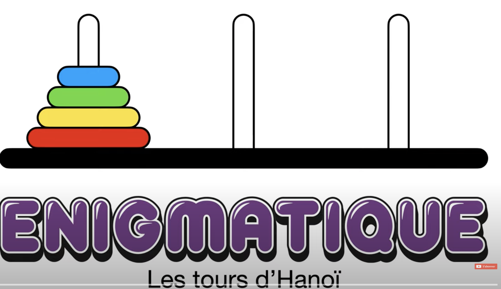
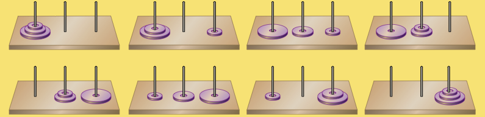
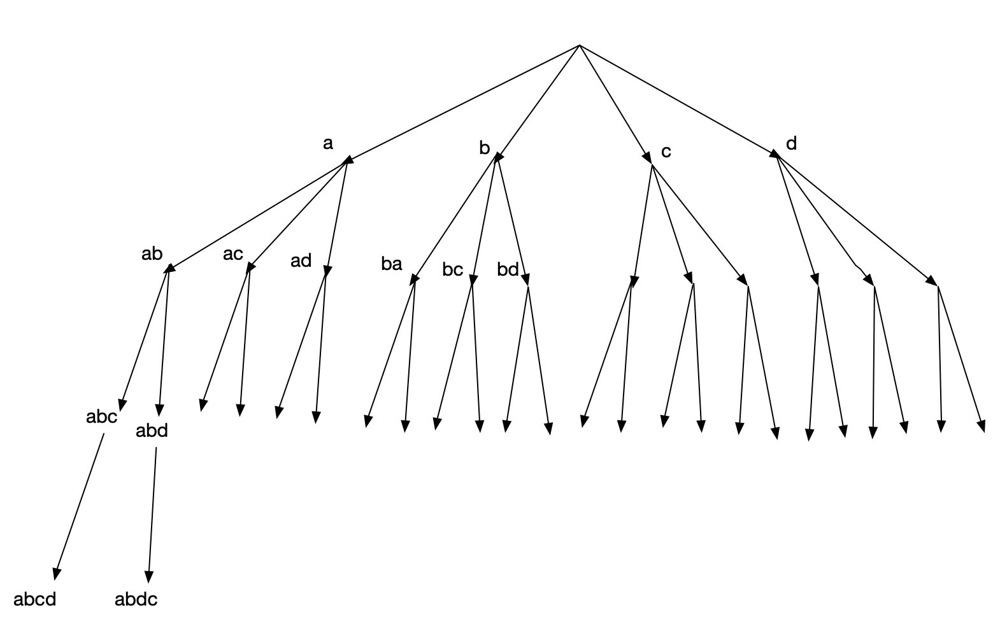
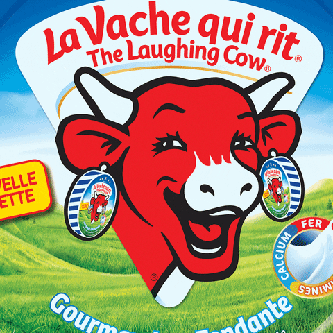

autres domaines recursivite
Le cours comprend:
- une partie 1: Introduction à la recursivité Recursivité et fonction récurente
- une partie 2: Suite du cours sur la recursivité
- une page d'exercices. pdf.
- Un TP1 avec les exercices classiques sur la recursivité: Lien
- Un TP2 avec le tracé de dessins recursifs (Turtle): Lien
Dans la 1ere partie, nous avons vu que la récursivité repose sur la capacité d’une fonction à s’appeler elle-même, de façon répétitive, jusqu’à ce qu’une certaine condition soit satisfaite. A chaque appel récursif, les paramètres de l’appel sont modifiés.
Cette méthode est utilisée surtout parce qu’elle facilite la résolution de problème liés à des relations de récurence (partie 1).
Dans cette deuxieme partie du cours sur la recursivité, nous allons étudier plus en detail la manière de definir la partie héredité d’un problème.
La question à laquelle on cherchera à repondre:
- supposons que le problème est/sera résolu pour le rang (n-1), comment utiliser le resultat du rang (n-1) pour resoudre le rang n?
La récursivité sert alors à imiter la manière dont l’être humain résoudrait certains problèmes. L’idée est d’arriver à comprendre comment il est possible de créer un sous-programme récursif en prévoyant les paramètres.
La fonction va exécuter une tâche, puis s’appeler elle-même, de façon répétitive jusqu’à la réalisation d’une condition particulière. C’est la condition d’arrêt. Les appels succéssifs sont alors restés actifs. Ils débouclent l’un après l’autre jusqu’à ce que le premier appel se termine finalement.
La terminaison de cette série d’appels récursifs repose donc sur la convergence des paramètres de la fonction vers cette condition d’arrêt.
Partie 2: Recursivité, problèmes avec sous-problemes interdependants
Définitions autour d’un algorithme récursif
Base et hérédité
L’algorithme récursif comprend 2 parties importantes:
- La Base : c’est le cas pour lequel le problème se resoud immediatement. Par exemple: dans le script
ajoute2: le problème se resoud immediatement pour N == 0.
- L’Hérédité : Dans la partie hérédité: il doit forcement y avoir un appel recursif, c’est à dire que la fonction s’auto-appelle, avec un paramètre plus “petit”. Par exemple:
return 2 + ajoute2(N-1).
Ainsi, dans le cas général, la fonction récursive s’écrit:
return ou pas return
- soit on calcule une valeur, alors il faut placer
returndans la partie hérédité - soit la fonction ne sert pas à calculer, ou bien, à modifier une variable non mutable par effet de bord: pas de
returndans la partie hérédité
Exemple: correction de l’exercice sur les dessins recursifs
Turtle doit dessiner un carré puis pivoter, selon la série d’instructions suivante. La condition d’execution est: largeur >= 20:
- dessiner un carré avec la fonction carre et le paramètre largeur.
- avancer de 1/3×largeur
- tourner de 26.565 degrés
- reduire la largeur d’un facteur 0.745: largeur = largeur * 0.745
Pas de return dans la partie hérédité.
Analyse mathématique: Preuve et correction
Généralités: Alan Turing (1912 – 1954) énonce ainsi son principe d’indéciablité de la terminaison d’un algorithme(1936): L’indecidabilite c’est l’impossibilité absolue et définitivement démontrée de résoudre par un procédé général de calcul un problème donné.
La terminaison, ainsi que la preuve de correction, ou bien la complexité doivent être prouvées par des arguments mathématiques.
Cas d’un algorithme non recursif
terminaison
La preuve de correction consiste à rechercher un convergent. Et prouver que ce convergent finit par atteindre la condition d’arrêt.
preuve de correction / validité :
La preuve de correction consiste à rechercher un invariant de boucle pour démontrer sa (non) variation selon un argument de recurence. Sinon, énoncer simplement, en langage mathematique, les instructions utilisées en langage informatique et finir en montrant que l’invariant de boucle ou bien le resultat obtenu repond bien à la specification de l’algorithme.
- Exemple 1 : faire la preuve de correction pour l’algo du calcul de la somme , de la moyenne.
- Exemple 2: prouver la terminaison de l’algo de recherche sequentielle (avec boucle while).
Dans le cas d’un algo recursif
Preuve de correction et de terminaison pour un algo récursif.
Le raisonnement consiste à vérifier qu’une propriété est vraie pour une valeur entière initiale puis à prouver que la propriété est héréditaire. Une propriété est héréditaire si la véracité pour un entier n quelconque entraîne la véracité pour l’entier suivant n+1. C’est le principe d’une échelle: si on peut atteindre le premier barreau et si on peut passer d’un barreau quelconque au barreau suivant, alors on peut monter jusqu’en haut de l’échelle.
La demonstration utilise justement 2 parties, qui correspondent à la Base et à l’Héredité:
Prenons l’exemple de la demonstration: preuve, terminaison, complexité pour la fonction recursive FACTORIELLE:
Terminaison
- cas de base: si n=0, fact(0) fait un test et renvoie 1, sans appel recursif.
Hypothèse de récurrence: supposons que fact(n) termine après n appels recursifs. Montrons que fact(n+1) termine après (n+1) appels recursifs.
fact(n+1) fait un test n+1>0 donc on passe au else puis on retourne (n+1)*fact(n). on appelle donc fact(n) qui termine apres n appels recursifs. Finallement fact(n+1) termine après (n+1) appels recursifs.
Preuve de correction
par un raisonnement par recurrence, montrons que fact(n) = n ! :
-
Base: pour n = 0 : fact(n) = fact(0) = 1 = 0! (OK)
-
Heredité: si vrai pour n, alors $fact(n) = n!$.
Démontrons que $fact(n+1) = (n+1)!$: fact(n+1) retourne $(n+1)*fact(n)$.
Donc $fact(n+1) = (n+1)*fact(n)$. Par hypothèse de récurence, $fact(n) = n!$ donc $fact(n+1) = (n+1)*n! = (n+1)!$. Ce qu’il fallait démontrer.
Complexité
Calcul de la complexité : Soit T(n) le nombre d’opérations fondamentales. Pour une fonction récurrente, c’est le nombre de résolution de la fonction de récurence. On a T(n) = T(n-1) + 1 donc T(n) = n
Application de la recursivité: les tours de Hanoï
Principe
On considère trois tiges plantées dans une base. Au départ, sur la première tige sont enfilées N disques de plus en plus étroits. Le but du jeu est de transférer les N disques sur la troisième tige en conservant la configuration initiale.
On ne peut déplacer qu’un seul disque à la fois et il est interdit de poser un disque sur un autre plus petit.
il faut à un moment ou à un autre faire la place pour pouvoir déplacer le gros disque du dessous, ce qui impose d’avoir déplacé préalablement les N–1 plus petits sur un seul et même piquet, c’est-à-dire, d’avoir résolu préalablement le problème des tours de Hanoï pour ces N–1 disques :

video - resolution itérative des tours de Hanoi

image issue du site : accromath
algorithme récursif
L’algorithme récursif pour ce problème est étonnament réduit :
Résultat
Algorithme recursif de permutation
Le problème des permutations
Une permutation d’objets distincts rangés dans un certain ordre correspond à un changement de l’ordre de succession de ces objets. https://fr.wikipedia.org/wiki/Permutation
Comment construire les permutations de abcd?
Il faut d’abord reserver a en première position. Puis réaliser toutes les permutations sur la chaine bcd. Comment fait-on cela? Il faut d’abord reserver b puis réaliser toutes les permutations sur la chaine cd… On voit clairement apparaitre l’aspect recursif de cet algorithme.
Soit la fonction permut qui realise ces permutations. La partie appelée Base sera:
Script de la partie héredité de la fonction permut
- au 1er appel de la fonction: il faut reserver chacune des lettres du mot comme premiere lettre. On commence par la premiere, “a”, correspondant au variant de boucle
i = 0:
- Il faut ensuite associer “a” avec TOUS les mots issus de la permutation de “bcd”. Cela peut être réalisé avec l’appel recursif:
- Puis construire les chaines avec les mots mélangés retournés.
Arbre des appels recursifs

Arbre à compléter
Exercice
1. Dans un editeur Python: Compléter et tester ce script de la fonction permut avec la chaine ‘abcd’.
2. Repondre sur cahier de labo: Représenter l’arbre des appels recursifs, et compléter celui-ci.
3. cahier de labo: Quelle est la longueur de la liste retournée par cette fonction, pour ‘abcd’? Cette valeur est-elle prévisible?
4. cahier de labo: Quelle est la complexité de la fonction permut?
5. editeur Python: Créer une fonction verif qui vérifie si chaque mot permuté dans la liste est unique. Déterminer la complexité de cette nouvelle fonction. Indiquer la complexité dans le cahier de labo.
6. editeur Python: Créer une nouvelle fonction, que vous appelerez permut_noms qui donne toutes permutations de noms dans une liste. Par exemple, avec ['Riri', 'Fifi', 'Loulou'], on aura: [('Riri', 'Fifi', 'Loulou'), ('Riri', 'Loulou', 'Fifi'), ('Fifi', ...), ... ]
D’autres domaines exploitant la récursivité
La récursivité se retrouvent dans d’autres situations, où elle prend parfois d’autres noms.
L’autosimilarité
L’autosimilarité est le caractère d’un objet dans laquelle on peut trouver des similarités en l’observant à différentes échelles. Exemple : le Tapis de Sierpiński.

le Tapis de Sierpiński et l'autosimilarité
Corécursivité
Les fractales ont cette propriété d’autosimilarité, mais elles ont plutôt à voir avec un phénomène un peu différent qui s’appel la corécurisivité (ou corécursion). Le tapis de Sierpiński, du nom de Wacław Sierpiński, est une fractale obtenue à partir d’un carré. Le tapis se fabrique en découpant le carré en neuf carrés égaux avec une grille de trois par trois, et en supprimant la pièce centrale, et en appliquant cette procédure récursivement aux huit carrés restants.
Mise en abyme
La mise en abyme est un procédé consistant à représenter une œuvre dans une œuvre similaire, par exemple en incrustant dans une image cette image elle-même.

L’intrigue du film Inception
Dans «Inception», Nolan voulait explorer l’idée de personnes partageant un espace de rêve. Cela vous donne la possibilité d’accéder à l’inconscient de quelqu’un. La majorité de l’intrigue du film se déroule dans ces mondes oniriques interconnectés. Cette structure crée un cadre dans lequel les actions dans les mondes réels ou oniriques se répercutent sur les autres.
Travail pratique
Lien vers le TP: dessins recursifs
Liens
-
Cours de Serge Bayes lycee Eucalyptus
-
Approfondir : voir la page https://fr.wikipedia.org/wiki/Algorithme_récursif
-
un bon exemple de l’exercice des permutations: les menus pascal.ortiz.free.fr
-
Site de Gerard Vuillemin